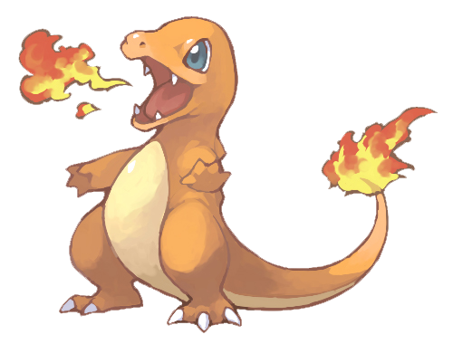

Mon Pokedex
Mais qu'est-ce qu'un Pokédex?
Le pokedex contient les informations sur les pokemons que tu as rencontrés! Voici la liste des 6 premiers Pokémon :
Mes Pokémons
| Numéro | Element | Photo | Nom | Description |
|---|---|---|---|---|
| #175 | Fée |  |
Togepi | L'énergie vitale de Togepi provient des émotions positives et heureuses exprimé par les gens et les Pokémons. On dit même que sa coquille est remplie de joie. Si jamais il ne ressent que haine et désespoir, il finit par mourir. « Qui fait tenir debout un Togepi endormi aura la chance pour lui… » |
| #004 | Feu |  | Salameche | De récentes études prouvent que la flamme qui brûle sur la queue de Salamèche indique son état de santé, mais aussi son caractère. S'il se sent faible, la flamme sera toute petite. Et si par malheur sa flamme s'éteint, il meurt, car c'est le seul moyen pour lui de se refroidir. |
| #054 | Eau |  |
Psykokwak | Psykokwak est un étrange Pokémon mi-aquatique, mi-psy. Ce pauvre Pokémon a la migraine en permanence, et quand celle-ci atteint son paroxysme, il utilise de puissants pouvoirs psy sans s'en rendre compte. Il maîtrise alors l'attaque Choc mental avec perfection. |
| #129 | Eau | Magicarpe | On raconte qu'autrefois, Magicarpe était beaucoup plus puissant qu'aujourd'hui. Il ne sait faire que des ronds et des bonds dans l'eau. Il est malheureusement devenu célèbre pour son inutilité…cet étrange Pokémon a poussé de nombreux chercheurs a étudier son cas, mais aucune théorie plausible n'a été avancée. | |
| #143 | Normal | Ronflex | Ronflex est un Pokémon très pacifique, mais très paresseux aussi. Ses principales préoccupations de la journée sont dormir et manger. Son incroyable estomac est capable de digérer n'importe quoi, même le plus mortel des poisons. Ce Pokémon préfère faire la sieste plutôt que de se battre. | |
| #038 | Feu | Feunard | Feunard a longtemps été vénéré, car les gens pensaient qu'il était légendaire. C'est un Pokémon gracieux, dont les nombreuses queues se balancent au rythme de ses pas légers. Beaucoup de dresseurs convoitent Feunard, pour sa beauté et pour sa puissance au combat. |